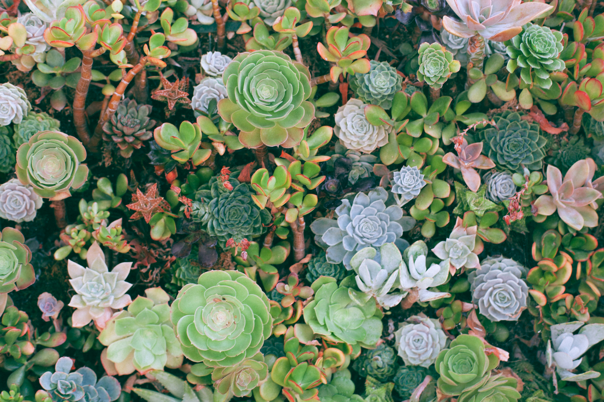

Let’s grow a variety of succulent plants.
succulents

다육 식물(多肉植物)은 건조 기후나 모래 환경에 적응하기 위하여 다육질의 잎에 물을 저장하고 있는 식물을 말한다.
다육식물은 잎이나 줄기, 또는 뿌리에 물을 저장한다.
선인장, 알로에, 돌나물과 등의 많은 식물군이 다육 식물에 포함되는데 하나의 식물과에서도 일부 식물만이 다육 식물로 불리는 경우도 있다.

특징
다육 식물은 내부에 물을 저장하고 있기 때문에 다른 식물에 비해 통통한 외관을 가지는 경우가 많다.
이러한 특성을 다육질이라고 부르는데 다육 식물은 이러한 특성 이외에도 물을 절약하기 위해 다음과 같은 다양한 특성을 가지고 있다.